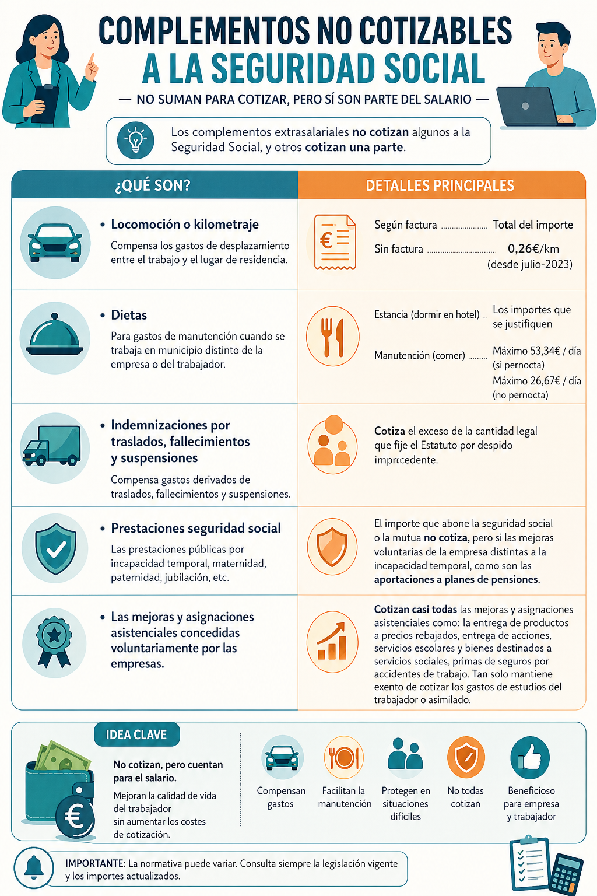

CONCEPTOS QUE COTIZAN
- No todo lo que cobran las personas trabajadoras cotiza a la seguridad social, por lo que hay que determinar que cotiza y que no.
- Además no solo hay una base, hay 3.
DETERMINAMOS LO QUE COTIZA Y LO QUE NO:
- El salario base y los complementos salariales cotizan a la seguridad social.
- Las pagas extraordinarias, con independencia de que se cobren dos veces al año o se cobren de forma prorrateada todos los meses, siempre cotizan todos los meses, se "cotiza de manera prorrateada".
-Las horas extra cotizan para algunas bases y para otras no.
- Los complementos extrasalariales no cotizan o cotizan solo una parte.
